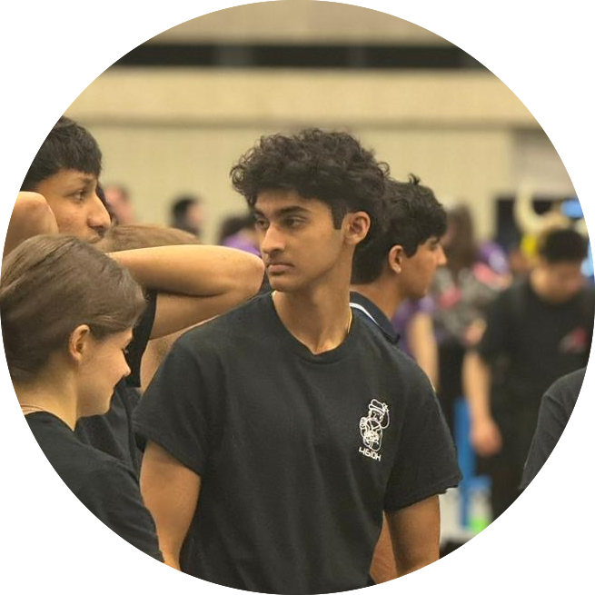
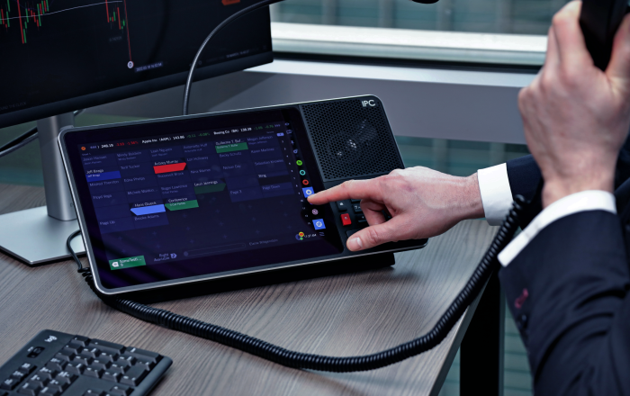
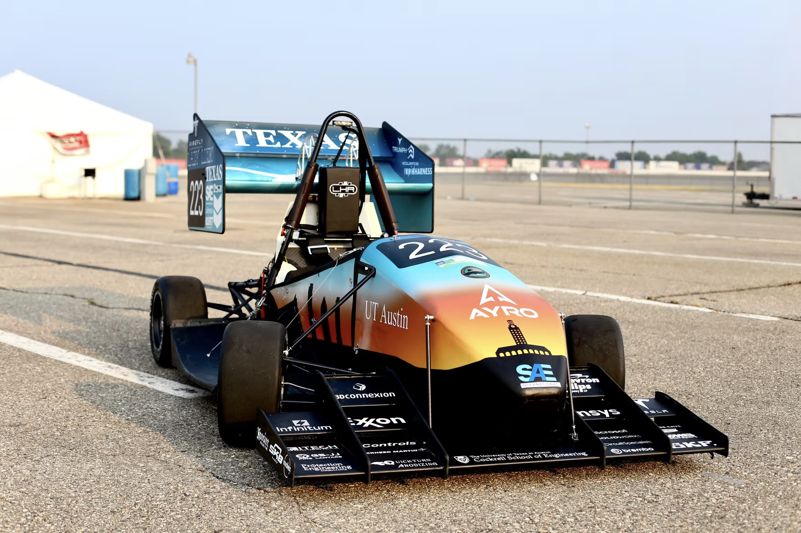
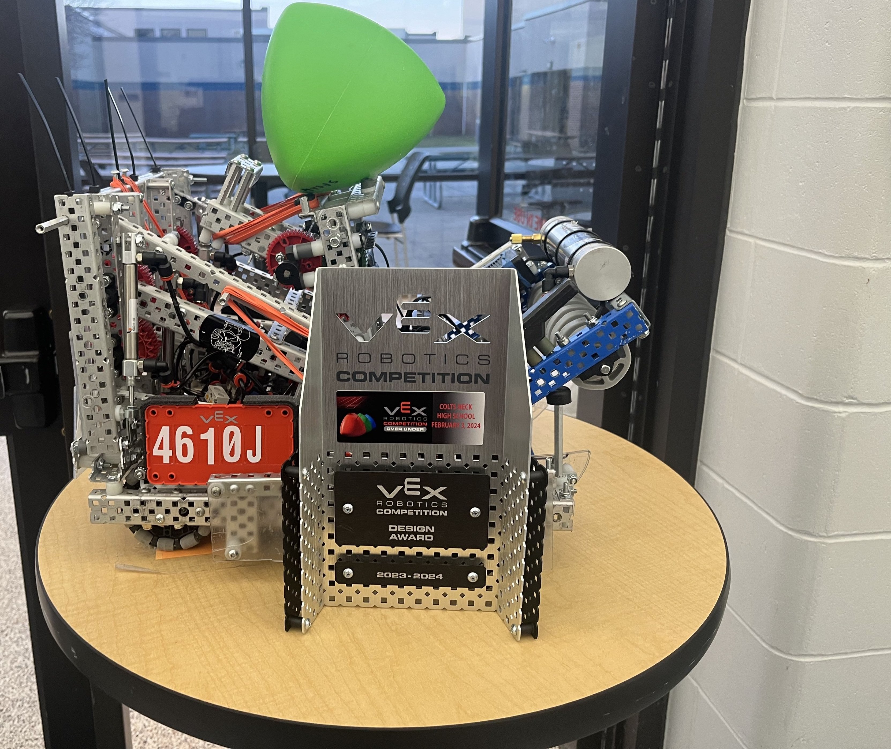
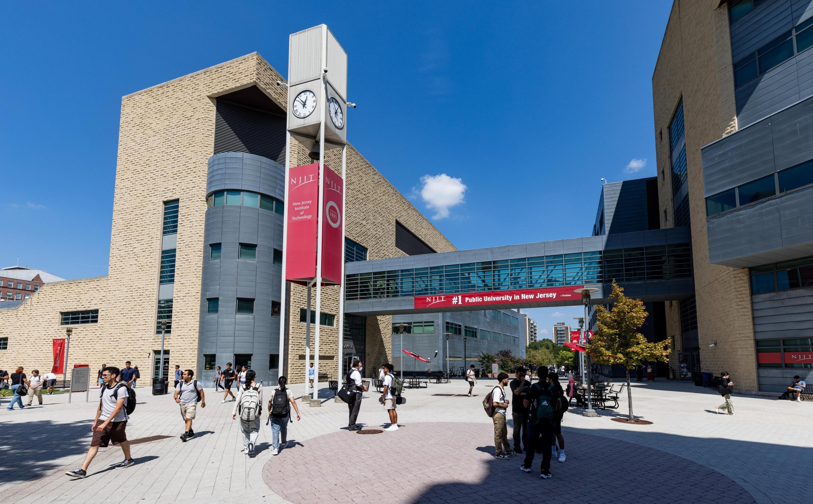

Rishi Bala
ECE & Business Honors · UT Austin
Digital Design & Verification · Embedded Systems · Computer Architecture

I'm a sophomore at UT Austin pursuing degrees in Electrical and Computer Engineering Honors and Business Honors under the Texas ECB program.
Outside of class, I've led my school's newspaper as editor-in-chief and fronted our award-winning jazz band as drummer. On the technical side, I'm proficient in Java, Python, C, C++, and Rust, and I work regularly with hardware tools including Fusion360, SolidWorks, and Vivado. In high school, I captained my VEX robotics team to a second-place world finish, and interned at the New Jersey Institute of Technology designing milli-scale robotic assemblies and co-authoring a review paper on magnetotactic bacteria.
Currently at UT Austin, I serve as the Controls System Lead for Longhorn Racing Electric, owning the full design cycle on the car’s Vehicle Control Unit: from KiCad schematic and PCB layout through FreeRTOS firmware and safety logic. I also build FPGA projects in SystemVerilog: a pipelined CME market making engine targeting sub-μs tick-to-order latency, and a UVM-verified Aho-Corasick pattern-matching accelerator. I work as an Embedded Firmware Intern at IPC Systems in New York on latency-critical turret firmware in C/C++ and Rust. My focus spans digital design and verification, embedded and firmware development, and computer architecture.

IPC Systems · May 2026 – Present
C · C++ · Rust · GStreamer · Wayland

Longhorn Racing – Electric · August 2025 – Present
C · STM32 · CAN · FreeRTOS · KiCad

Captain, Head Builder, Design, CAD · September 2021 – May 2025
Fusion 360 · CAD · Team Leadership

NJIT · Prof. Ravindra & Prof. Mani · June – August 2024
Fusion 360 · CAD · Research
See my Github for the full code and in-depth writeups.